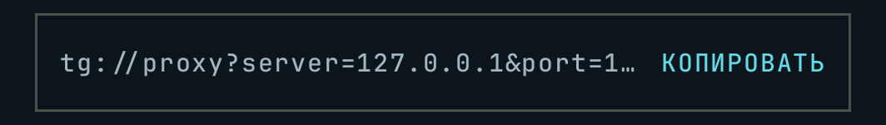

TG-WS · Подключение
Прокси поднят
одним нажатием
Питание запускает локальный прокси. Дальше — статус [OK] ПОДКЛЮЧЕНО и готовая ссылка tg://proxy для Telegram.
Деталь экрана · строка tg://proxyextra-01
